| 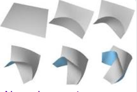 | The Shape Space of Discrete Orthogonal Geodesic Nets Michael Rabinovich et al. (2018 TOG) (,) - 2019.03.28 Ab: Discrete orthogonal geodesic nets (DOGs) are a quad mesh analogue of developable surfaces. In this work we study continuous deformations on these discrete objects. Our main theoretical contribution is the characterization of the shape space of DOGs for a given net connectivity. We show that generally, this space is locally a minifold of a fixed dimension, apart from a set of sigularities, implying that DOGs are continuously deformable. We further show how to extend the shape space of DOGs by supporting creases and curved folds and apply the developed tools in an editing system for developable surfaces that supports arbitrary bending, strecthing, cutting, curved folds, as well as smoothing and subdivision operations. |
| Recent development on innovation design of reconfigurable mechanisms in China Wuxiang Zhang et al. (2018 Front. Mech. Eng.) (,) - 2019.01.14 Ab: Reconfigurable mechanisms can deliberately reconfigure themselves by rearranging the connectivity of components to meet the different requirements of tasks. Metamorphic and origami-derived mechanisms are two kinds of typical reconfigurable mechanisms, which have attracted increasing attention in the field of mechanisms since they were proposed. This paper presents an overview of recent developments in innovation design of reconfigurable mechanisms in China, including metamorphic and origami mechanisms and their typical applications. The future development trends are analyzed and forecasted. | |
 |
Slender origami with complex 3D folding shapes S. Kamrava et al. (2018 Frontiers of Physics) (,) - 2019.01.13 Ab: One-dimensional slender bodies can be deformed or shaped into spatially complex curves relatively easily due to their inherent compliance. However, traditional methods of fabricating complex spatial shapes are cumbersome, prone to error accumulation and not amenable to elegant programmability. In this letter, we introduce a one-dimensional origami based on attaching Miura-ori that can fold into various programmed two- or three-dimensional shapes. We study the out-of-plane displacement characteristics of this origami and demonstrate with examples, design of slender bodies that conform to programmed complex spatial curves. Our study provides a new, accurate, and single actuation solution of shape programmability. |
| 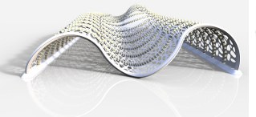 | Circular Arc Snakes and Kinematic Surface Generation M. Barton et al. (2013 Eurographics) (,) - 2019.01.09 Ab: We discuss the theory, discretization, and numerics of curves which are evolving such that part of their shape, or at least their curvature as a function of arc length, remains unchanged. The discretization of a curve as a smooth sequence of circular arcs is well suited for such purposes, and allows us to reduce evolution of curves to the evolution of a control point collection in a certain finite-dimensional shape space. We approach this evolution by a 2-step process: linearized evolution via optimized velocity fields, followed by optimization in order to exactly fulfill all geometric side confitions. We give applications to freeform architecture , including "rationalization" of a surace by congruent arcs, form finding and, most interestingly, non-static architecture. |
| 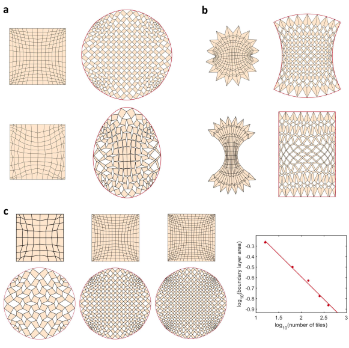 | Programming shape using kirigami tessellations Choi et al. (2018 Harvard Preprint) (,) - 2018.11.20 Ab: Kirigami tessellations, regular planar patterns formed by cutting flat, thin sheets, have attracted recent scientific interest for their rich geometries, surprising material properties and promise for technologies. Here we pose and solve the inverse problem of designing the number, size, and orientation of cuts that allows us to convert a closed, compact regular kirigami tessellation of the plane into a deployment that conforms approximately to any prescribed target shape in two and three dimensions. https://www.researchgate.net/publication/329841949_Programming_shape_using_kirigami_tessellations |
| 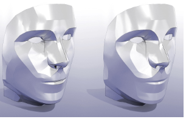 | Developability of Triangle Meshes Oded Stein et al. (2018 Siggraph 2018) code, paper (,) - 2018.11.19 Ab: A surface is developable if it can be flatten into the plane without stretching or shearing - piecewise developable surfaces are desireable in contexts like manufacturing, where an object might be assembled from pieces of, e.g., thin plywood or sheet metal, or milled from a solid block using a cylindrical cutting tool. We introduce a new notion of developability for triangle meshes which captures two key properties of smooth developable surfaces, namely flattenability and existence of straight ruling lines. This definition can be used as a starting point for algorithms in developable surface modeling - we consider a variational approach that drives a given mesh toward developable pieces separated by regular seam curves. Computation anmounts to gradient descent on an energy with surpport in the vertex star, without the need to explicity cluster patches or identify seams. We briefly explore applications to developable design and manufacturing. |
| 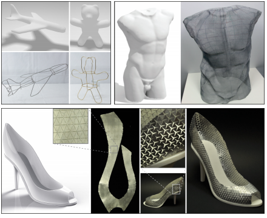 | State of the Art in Methods and Representations for Fabrication-Aware Design Amit H. Bermano (2017 Eurographics REVIEW) (,) - 2018.11.18 Ab: Computational manufacturing technologies such as 3D printing hold the potential for creating objects with previously undreamed-of combinations of functionality and physical properties. Human designers, however, typically cannot exploit the full geometric (and often material) complexity of which these devices are capable. This STAR examines recent systems developed by the computer graphics community in which designers specify higher-level goals ranging from structural integrity and deformation to appearance and aesthetics, with the final detailed shape and manufacturing instructions emerging as the result of computation. It summarizes frameworks for interaction, simulation, and optimization, as well as documents the range of general objectives and domain-specific goals that have been considered. An important unifying thread in this analysis is that different underlying geometric and physical representations are necessary for different tasks: we document over a dozen classes of representations that have been used for fabrication-aware design in the literature. We analyze how these classes possess obvious advantages for some needs, but have also been used in creative manners to facilitate unexpected problem solutions. |
| 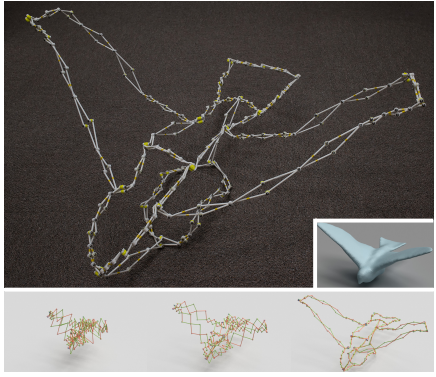 | Deployable 3D Linkages with Collision Avoidance Changxi Zheng (2016 Siggraph) (,) - 2018.11.17 Ab: We present a pipeline that allows ordinary users to create deployable scissor linkages in arbitrary 3D shapes, whose mechanisms are inspired by Hoberman’s Sphere. From an arbitrary 3D model and a few user inputs, our method can generate a fabricable scissor linkage resembling that shape that aims to save as much space as possible in its most contracted state. Self-collisions are the primary obstacle in this goal, and these are not addressed in prior work. One key component of our algorithm is a succinct parameterization of these types of linkages. The fast continuous collision detection that arises from this parameterization serves as the foundation for the discontinuous optimization procedure that automatically improves joint placement for avoiding collisions. While linkages are usually composed of straight bars, we consider curved bars as a means of improving the contractibility. To that end, we describe a continuous optimization algorithm for locally deforming the bars. |
 |
Interactive Modeling of Mechanical Objects Francisca Gil Ureta et al. (2016 Eurographics Symposium on Geometry Processing) (,) - 2018.11.16 Ab: Our system minimizes or, in most cases, completely eliminates the need for the user to manipulate low-level geometry of joints. This is achieved by automatically inferring a small number of plausible combinations of joint dimensions, placement and orientation from part geometry, with the user making the final high-level selection based on object semantic. Through user studies, we demonstrate that functional results with a satisfying appearance can be obtained quickly by users with minimal modeling experience, offering a significant improvement in the time required for joint construction, compared to standard modeling approaches. |
| 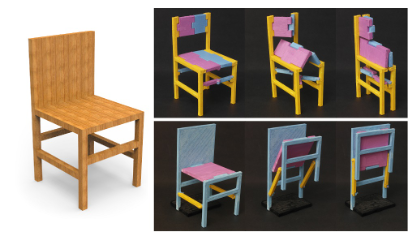 | Foldabilitzing Furniture Honghua Li (2015 Siggraph) (,) - 2018.11.15 Ab: We introduce the foldabilization problem for space-saving furniture design. Namely, given a 3D object representing a piece of furniture, our goal is to apply a minimum amount of modification to the object so that it can be folded to save space --- the object is thus foldabilized. We focus on one instance of the problem where folding is with respect to a prescribed folding direction and allowed object modifications include hinge insertion and part shrinking. We develop an automatic algorithm for foldabilization by formulating and solving a nested optimiation problem operating at two granularity levels of the input shape. Specifically, the input shape is first partitioned into a set of integral folding units. For each unit, we construct a graph which encodes conflict relations, e.g., collisions, between foldings implied by various patch foldabilizations within the unit. Finding a minimum-cost foldabilization with a conflict-free folding is an instance of the maximum-weight independent set problem. In the outer loop of the optimization, we process the folding units in an optimized ordering where the units are sorted based on estimated foldabilization costs. We show numerous foldablization results computed at interactive speed and 3D-print physical prototypes of these results to demonstrate manufacturability. |
 |
Origami structures with a critical transition to bistability arising from hidden degrees of freedom Jesse L. Silverberg et al. (2015 Nature materials) (,) - 2018.11.14 Ab:Origami is used beyong purely aesthetic pursuits to design responsive and customizable mechanical metamaterials. However, a generalized physical understanding of origami remains elusive, owing to the challenge of determining whether local kinematic constraints are globally compatible and to an incomplete understanding of how the folded sheet's material properties contribute to the overall mechanical response. Here, we show that the traditional square twist, whose crease pattern has zero degrees of freedom and therefore should not be foldable, can nevertheless be folded by accessing bending deformations that are not explicit in the crease pattern. These hidden bending DOF are separated from the crease DOF by an energy gap that gives rise to a geometrically driven critical bifurcation between mono- and bistability. Noting its potential utility for fabricating mechanical switches, we use a temperature-responsive polymer-gel version of the square twist to demonstrate hysteretic folding dynamics at the sub-millimetre scale. |
| 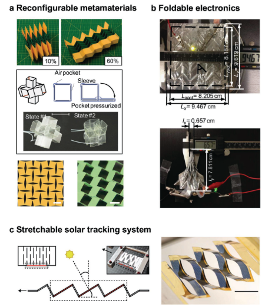 | Assembly of Advanced Materials into 3D Functional Structures by Methods Inspired by Origami and Kirigami: A Review Xin Ning et al. (2018 Advanced Materials) (,) - 2018.11.13 Ab: Origami and Kirigami, the ancient techniques for making paper works of art, also provide inspiration for routes to structural platforms in engineering applications, including foldable solar panels, retractable roofs, deployable sunshields, and many others. This review highlights some of the most important developments in this field, with a focus on routes to assembly that apply across a range of length scales and with advanced materials of relevance to practical applications. |
| 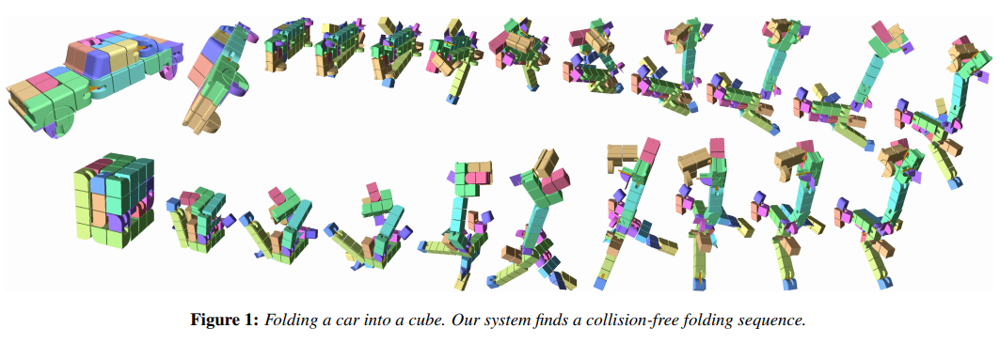 | Boxelization: Folding 3D Objects into Boxes Yahan Zhou et al. (Siggraph) (,) - 2018.11.12 Ab: We present a method for transforming a 3D object into a cube or a box using a continuous folding sequence. Our method produces a single, connected object that can be physically fabricated and folded from one shape to the other. We segment the object into voxels and search for a voxel-tree that can fold from the input shape to the target shape. This involves three major steps: finding a good voxelizaton, finding the tree structure that can form the input and target shapes's configurations, and finding a non-intersecting folding sequence. We demonstrate our results on several input 3D objects and also physically fabricate some using a 3D printer. |
| 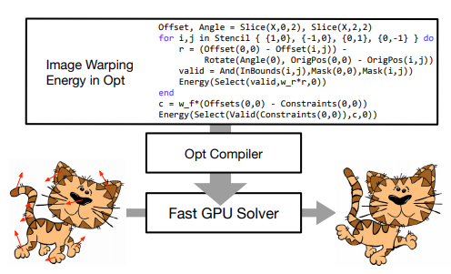 | Opt: A Domain Specific Language for Non-linear Least Squares Optimization in Graphics and Imaging Zachary Devito et al. (2017 Siggraph 2018) (,) - 2018.11.11 Ab: In our results, we implement a variety of real-world graphics and vision applications. Their energy functions are expressible in tens of lines of code, and produce highly-optimized GPU solver implementations. These solvers are competitive in performance with the best published hand-tuned, application-specfic GPU solvers, and orders of magnitude beyond a general-purpose auto-generated solver. |
| 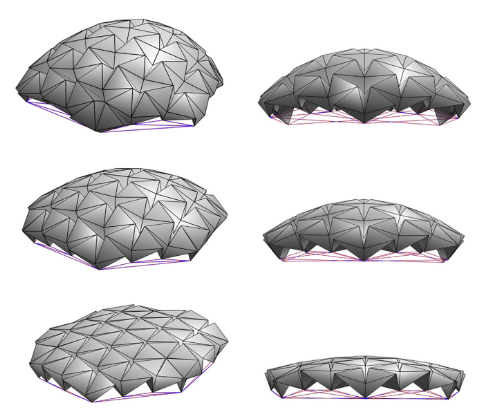 | On the design of origami structures with a continuum of equilibrium shapes Luca Magliozzi et al. (2017 Composites Part B) |
| 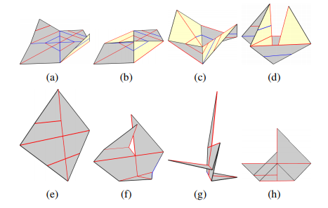 | Plan Folding Motion for Rigid Origami via Discrete Domain Sampling Zhonghua xi, Jyh-Ming Lien(ICRA 2015) (,) - 2018.11.10 Ab:Self-folding robot is usually modeled as rigid origami, a class of origami whose entire surface remains rigid during folding except at crease lines. In this work, we focus on finding valid folding motion that brings the origami from the unfolded state continuously to the folded state. Although recent computational methods allow rapid simulation of fodling process of certain rigid origamis, these methods can fail even when the input crease pattern is extremely simple but with implicit folding orders. Moreover, due to the rigidity requirement, the probability of generating a valid configuration via uniform sampling is zero, which greatly hinders the applicability of traditonal sampling-based motion planners. We propose a novel sampling strategy that samples in the discrete domain. Our experimental results show that the proposed method could efficiently generate valid configurations. Using those configurations, the planners successfully fold several types of rigid origamis that the existing methods fail to fold and could discover multiple folding paths in different homotopic for multi-DOF origamis. |
| 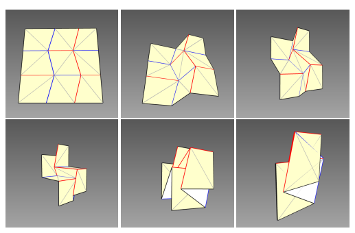 | Folding Rigid Origami with Closure Constraints Zhonghua xi, Jyh-Ming Lien(ASME 2014) (,) - 2018.11.09 Ab:Rigid origami is a class of origami whose entire surface remains rigid during folding except at crease lines. Rigid origami finds applications in manufacturing and packaging, such as map folding and solar panel packing. Advances in material science and robotics engineering also enable the realization of self-folding rigid origami and have fueled the interests in computational origami, in particular the issues of foldability, i.e., finding folding steps from a flat sheet of crease patterns to desired folded state. For example, recent computational methods allow rapid simulation of folding process of certain rigid origamis. However, these methods can fail even when the input crease pattern is extremely simple. This paper attempts to address this problem by modeling rigid origami as a kinematic system with closure constraints and solve the foldabiity problem through a randomized method. Our experimental results show that the proposed method successfully fold several types of rigid origamis that the existing methods fail to fold. |
| 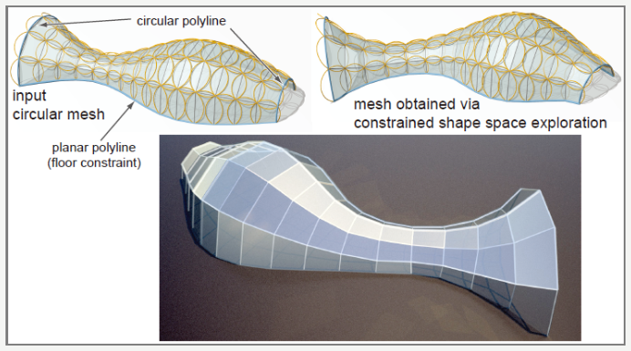 | Shape space exploration of constrained meshes Yong-Liang Yang et al. (2011 Siggraph Asia) (,) - 2018.11.08 Ab: We present a general computational framework to locally characterize any shape space of meshes implicitly prescribed by a collection of non-linear constraints. We computationally access such manifolds, typically of high dimension and co-dimension, through first and second order approximants, namely tangent spaces and quadratically parameterized osculant surfaces. Exploration and navigation of desirable subspaces of the shape space with regard to application specific quality measures are enabled using approximants that are intrinsic to the underlying manifold and directly computable in the parameter space of the osculant surface. We demonstrate our framework on shape spaces of planar quad (PQ) meshes, where each mesh face is constrained to be (nearly) planar, and circular meshes, where each face has a circumcircle. We evaluate our framework for navigation and design exploration on a variety of inputs, while keeping context specific properties such as fairness, proximity to a reference surface, etc. |
| 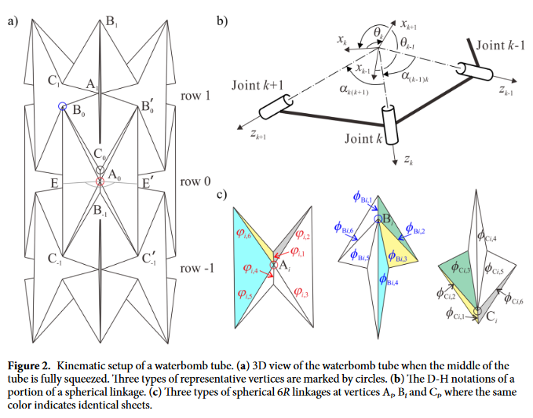 | Twist of Tubular Mechanical Metamaterials Based on Waterbomb Origami Huijuan Feng, Jiayao Ma, Yan Chen, Zhong You (2018 Scientific reports) (,) - 2018.11.07 Ab:Origami-inspired mechanical metamaterials have recently drawn increasing attention since their flexible mechanical performance has been greatly enhanced by introducing origami patterns to the thin-shell structures. As a typical origami pattern, the waterbomb tube could be adopted to the design of mechanical etamaterials. However, existing designs predominantly make use of the radial expansion/contraction motion of the structure, thereby limiting its full potential to be explored. Here we report a twist motion of tubular mechanical metamaterials based on waterbomb origami that is previously undiscovered. We demonstrate through a detailed kinematic analysis that the initial twist is a rigid-origami motion if the corresponding row of the tube under twist is fully squeezed with both line and plane symmetry, whereas all the subsequent twist motion requires material deformation. The twist angle per axial strain and its relationship with the geometrical parameters of the tube are revealed. Experimental results show the enhancement in stiffness of the tube with the occurrence of the continuous twist motion. We envisage that this finding could greatly expand the application of the waterbomb tube in the design of origami metamaterials with programmable and tuneable mechanical properties. |
| 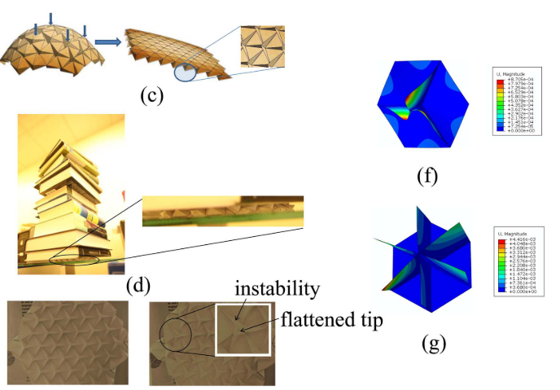 | Origami based Mechanical Metamaterials Cheng Lv et al. (2014 Scientific reports) (,) - 2018.11.06 Ab:We describe mechanical metamaterials created by folding flat sheets in the tradition of origami, the art of paper folding, and study them in terms of their basic geometric and stiffness properties, as well as load bearing capability. A periodic Miura-ori pattern and non-periodic Ron Resch pattern were studied. Unexceptional coexistence of positive and negative Poisson's ratio was reported for Miura-ori pattern, which are consistent with the interesting shear behavior and infinity bulk modulus of the same pattern. Unusually strong load bearing capability of the Ron Resch pattern was found and attributed to the unique way of folding. This work paves the way to the study of intriguing properties of origami structures as mechanical metamaterials. |
| 3D Shape Segmentation via Shape Fully Convolutional Networks Pengyu Wang, Yuan Gan et al. (2018 Computers & Graphics) (,) - 2018.11.05 Ab:We design a novel fully convolutional network architecture for shapes, Shape Fully Convolutional Networks (SFCN). In our approach, SFCNs are trained triangles-to-triangles by using three low-level geometric features as input. Finally, the feature voting-based multi-label graph cuts is adopted to optimise the segmentation results obtained by SFCN prediction. The experiment results show that our method can effectively learn and predict mixed shape datasets of either similar or different characteristics, and achieve excellent segmentation results. The main contributions of this paper include: We design a fully convolutional network architecture for shapes, named SFCN, and is able to achieve effective convolution and pooling operations on the 3D shapes. We present the shape segmentation and labelling based on SFCN. It can be triangles-to-triangles by three low-level geometric features, and outperforms the state-of-the-art shape segmentation. Excellent segmentation results on training and predicting mixed datasets of different categories of shapes are achieved. | |
| 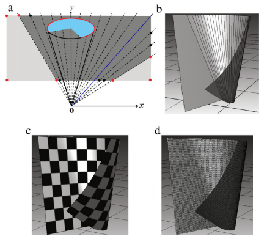 | Constructing developable surfaces by wrapping cones and cylinders Hae-Do Hwang, Seung-Hyun Yoon (2015 CAD) (,) - 2018.11.04 Ab: We model developable surfaces by wrapping a planar figure around cones and cylinders. Complicated developables can be constructed by successive mappings using cones and cylinders of different sizes and shapes. We also propose an intuitive control mechanism, which allows a user to select an arbitrary point on the planar figure and move it to a new position. Numerical techniques are then used to find a cone or cylinder that produces the required mapping. Several examples demonstrate the effectiveness of our technique. The main contributions of this paper can be summarized as follows: A simple and effective technique for modeling the bending of a sheet of paper using cones and cylinders; A methodology for the successive application cones and cylinders of different sizes and shapes to produce complicated developable surfaces from an arbitrary planar figure. Interactive control of bending by finding a cone or cylinder which corresponds to a specified displacement by the user. |
| PointNet: Deep Learning on Point Sets for 3D Classification and Segmentation Charles R. Qi, Hao Su et al. (2017 CVPR) (,) - 2018.11.03 Ab:Point cloud is an important type of geometric data structure. Due to its irregular format, most researchers transform such data to regular 3D voxel grids or collections of images. This, however, renders data unnecessarily voluminous and causes issues. In this paper, we design a novel type of neural network that directly consumes point clouds which well respects the permutation invariance of points in the input. Our network, named PointNet, provides a unified architecture for applications ranging from object classification, part segmentation, to scene semantic parsing. Though simple, PointNet is highly efficient and effective. Empirically, it shows strong performance on par or even better than state of the art. Theoretically, we provide analysis towards understanding of what the network has learnt and why the network is robust with respect to input perturbation and corruption. | |
| 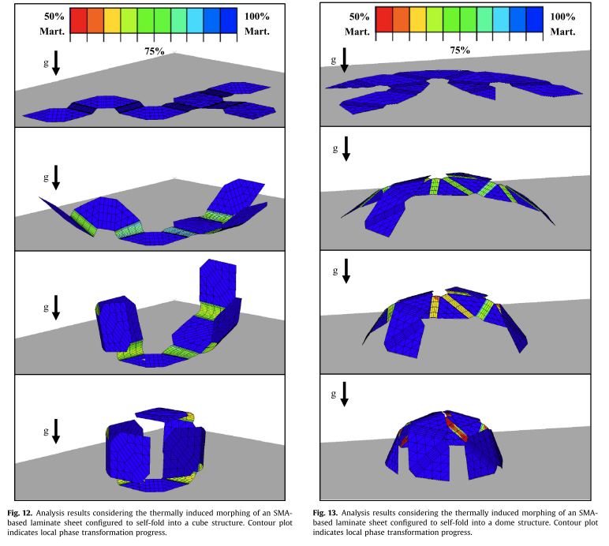 | Towards building smart self-folding structures Edwin Alexander Peraze Hernandez et al. (2013 Computers & Graphics) (,) - 2018.11.03 Ab: We report our initial progress on synthesizing complex structures from programmable self-folding active materals, which we call Smart Multi-Use Reconfigurable Forms. We have developed a method to unfold a given convex ploygonal mesh into a one-piece planar surface. We analyze the behavior of this surface as if it were constructed from realistic active materals such as shape memory alloys (SMAs). Based on our results, we believe that it is possible to use active materials to develop repregrammable self-folding complex structures. |
 |
Folding cartons: Interactive manipulation of cartons from 2D layouts Shuang Shan et al. (2018 CAGD) (,) - 2018.11.02 Ab:Cartons are broadly used in the packaging industry and in our daily life. While most traditional packages are axis-aligned cuboids, there is a recent trend of creating paper packages and cartons with more complicated geometries. In this work, we present an interactive system to manipulate 3D cartons from 2D layouts. Two key components, automatic folding and suggestive editing, make our system remarkably easy to use. The automatic folding step computes the 3D coordinates of vertexes i na 3D carton model based on a simple observation. Then, the suggestive editing step determines several geometric constraints, such as vertex merging, merging propagation, and panel pasting, so that users can flexibly manipulate 3D shapes. Moreover, our system supports automatic updating of the corresponding 2D layouts when the user constructs and edits carton shapes in 3D to correct and explore potential layouts. |
| Theoretical and Finite Element Analysis of Origami and Kirigami Based Structures Cheng Lv (2016 Dissertation) (, PDF) - 2018.11.01 Ab: Origami and kirigami, the technique of generating 3D structures from 2D flat sheets, are now more and more involved in scientific and engineering fields. The goal of this research is developing a method to analyze the mechanical behavior of origami and kirigami based structures. Mechanical characteristics, including nonlocal effect and fracture of the structures, as well as elasticity and plasticity of materials are studied. The method described here will pave a way to understand the mechanical response of a variety of origami and kirigami based structures under given mechanical loading. | |
 |
Synthesis of Fast and Collision-free Folding of Polyhedral Nets Y. Hao et al. (2018 Symposium on Computational Fabrication) (, PDF) - 2018.10.31 Ab: A predominant issue in the design and fabrication of highly non-convex polyhedral structures through self-folding, has been the collision of surfaces due to inadepuate controls and the computational complexity of folding-path planning. We propose a method that creates linearly foldable polyhedral nets, a kind of unfoldings with linear collision-free folding paths. We combine the topological and geometric features of polyhedral nets into a hypothesis fitness function for a genetic-based unfolder and use it to map the polyhedral nets into a low dimensional space. An efficient learning strategy is used to optimize the fitness function to produce the optimal nets. We experimentally demonstrate that the proposed method can find linearly foldable nets for highly non-convex polyhedra with substantial complexity. The technique presented in the paper will provide a powerful tool to enable designers, materials engineers, roboticists, to name just a few, to make physically conceivable structures through self-assembly by eliminating the common self-collision issue. It also simplifies shape morphing devices. Additionally, our approach makes foldable papercraft more accessible to younger childern and provides chances to enrich their education experiences. |
| Algorithmic lattice kirigami: A route to pluripotent materials Daniel M. Sussman et al. (2015 PNAS) (, PDF) - 2018.10.30 Ab:We use a regular arrangement of kirigami elements to demon- strate an inverse design paradigm for folding a flat surface into complex target configurations. We first present a scheme using arrays of disclination defect pairs on the dual to the honeycomb lattice; by arranging these defect pairs properly with respect to each other and choosing an appropriate fold pattern a target stepped surface can be designed. We then present a more general method that specifies a fixed lattice of kirigami cuts to be performed on a flat sheet. This single pluripotent lattice of cuts permits a wide variety of target surfaces to be programmed into the sheet by varying the folding directions |
|
| A methodology for transferring principles of plant movements to elastic systems in architecture Aline Vergauwen et al. (2017 CAD) (, PDF) - 2018.10.29 Ab: Curved-line folding, the act of folding paper along a pattern of curved lines to obtain a 3D shape, is an interesting starting-point for the design of innovative pliable structures. These exists a kinematic connection between two surfaces linked through a curved crease that can be used to generate a folding motion. However, due to the interdependency of geometry, forces and material properties the design of pliable structures based on curved-line folding is very complex. To facilitate the design process, adequate computational modelling methods are essential. This paper presents two ways of modelling: a geometric modelling mehtod based on discretisation of the crease pattern and a method based on Finite Element modelling Analysis (FEA). The proposed methods are validated by means of a case study in which a physical model is compared to digital ones. It can be concluded that the method based on FEA corresponds very well withthe physical model, proving its potential. The accuracy of the geometric modelling is improved by the introduction of a set of guidelines based on the direction of the principal bending moments in the pliable structure. Furthermore, the case study exposses how the material-dependent behaviour of pliable structures increases the complexity of the design and should certainly be part of future research. |
|
| A methodology for transferring principles of plant movements to elastic systems in architecture Simon Schleicher et al. (2015 CAD) (, PDF) - 2018.10.28 Ab: In architecture, kinetic structures enable buildings to react specifically to internal and external stimuli through spatial adjustments. These mechanical devices come in all shapes and sizes and are traditionally conceptualized as uniform and compatible modules. Typically, these systems gain their adjustability by connecting rigid elements with highly highly strained hinges. Though this construction principle may be generally beneficial for architectural applications that increasingly demand custom-made solutions, it has some major drawbacks. Adaptation to irregular geometries, for example, can only be achieved with additional mechanial complexity, which makes these devices often ery expensive, prone to failure, and maintenance-intensive. Searching for a promising alternative to the still persisting paradigm of rigid-body mechanics, the authors found inspiration in flexible and elastic plant movements. In this paper, they will showcase how today's computational modeling and simulation techniques can help to reveal motion principles in plants and to integrate the underlying mechanisms in flexible kinetic structures. By using three case studies, the authors will present key motion principles and discuss their scaling, distortion, and optimization. Finally, the acquired knowledge on bio-inspired kinetic structures will be applied to a representative application in architecture, in this case as flexible shading devices for double curved facades. |
|
| Constraint-based simulation of carton folding operations G. Mullineux and J. Matthews (2010 CAD) (, PDF) - 2018.10.27 Ab: When designing packaging machinery, there is a clear need to simulate the action of the machine itself to check that it functions correctly. There is also a need to simulate the motion of the carton itself during the various stages of the erection process. This is to ensure that unwanted interference between faces of the carton net does not occur. This is particularly the case when reconfigurable equipment is being used to check that the configuration is correct and to establish what motion control is required. It has been seen that it is possible to obtain a simulation by handling the transforms applied to the carton faces. Reducing the face graph to a spanning tree imposes a hierarchy on the faces and allows the required driving motions to be established. The cuts effectively made in forming the tree correspond to dyads in which the angular positions of two adjoining faces need to be established. This can be done by imposing constraints which say that the edges o either of each cut must come together. |
|
| Kirigami skins make a simple soft actuator crawl Rafsanjani et al. Science Robotics (21 February, 2018) (, PDF) - 2018.10.26 Ab:Bioinspired soft machines made of highly deformable materials are enabling a variety of innovative applications, yet their locomotion typically requires several actuators that are independently activated. We harnessed kirigami principles to significantly enhance the crawling capability of a soft actuator. We designed highly stretchable kirigami surfaces in which mechanical instabilities induce a transformation from flat sheets to 3D-textured surfaces akin to the scaled skin of snakes. First, we showed that this transformation was accompanied by a dramatic change in the frictional properties of the surfaces. Then, we demonstrated that, when wrapped around an extending soft actuator, the buckling-induced directional frictional properties of these surfaces enable the system to efficiently crawl. |
|
| Design, fabrication and control of origami robots Daniela Rus and Michael T. Tolley. Nature reviews (09 May, 2018) (, noPDF) - 2018.10.25 Ab:Origami robots are created using folding processes, which provide a simple approach to fabricating a wide range of robot morphologies. Inspired by biological systems, engineers have started to explore origami folding in combination with smart material actuators to enable intrinsic actuation as a mean to decouple design from fabrication complexity. The built-in crease structure of origami bodies has the potential to yield compliance and exhibit many soft body properties. Conventional fabrication of robots is generally a bottom-up assembly process with multiple low-level steps for creating subsystems that include manual operations and open multiple iterations. By contrast, natural systems achieve elegant designs and complex functionalities using top-down parallel transformation approaches such as folding. Folding in nature creates a wide spectrum of complex morpho-functional structures such as proteins and intestines and enables the development of structures such as flowers, leaves and insect wings. Inspired by embedded smart material actuators to create origami robots. The design and fabrication of origami robots exploits top-down, parallel transformation approaches to achiee elegant designs and complex functionalities. In this Review, we first introduce the concept of origami robotics and then highlight advances in design principles, fabrication methods, actuation, smart materials and control algorithms. Applications of origami robots for a variety of devices are investigated, and future diretions of the field are discussed, examining both challenges and opportunities. |
|
 |
Predicting origami-inspired programmable self-folding of hydrogel trilayers Ning An et al. Smart Materials and Structures 2016 (, PDF) - 2018.10.24 Ab:The art and science of origami has evolved from aesthetic pursuits to design folding structures across cultures and scales. Leveraging origami principles allow engineers to fabricate, asembly, store, and morph structure only through bending without any cutting and gluing. The resultant origami-inspired structures are featured by the capabilities of compact stowing, reconfigurability, and reduction in manufacturing complexity. When the origami principles are translated to soft active or programmable materials, which are characterized by their remarkable ability to respond to external stimuli in a variety of ways, the synergy of the two merits opens up fresh avenues for the development of origami-inspired self-folding structures. As one of the sucessful examples, hydrogels, a class of soft active materials, have been explored to achieve a substantial number of self-folding structures in either a bilayer or a trilayer fashion. |
 |
A wavy auxetic surface and the prediction model inspired by Miura-ori Lin Yu et al. (, PDF) - 2018.10.24 Ab: Based on the mechanism of the negative Poisson's ratio of Miura-ori, a new kind of wavy surface is presented in this paper by replacing the polylines in Miura-ori with trigonometric curves. This wavy surface not only inherits the auxetic responses of Miura-ori in both directions, but also eliminate the corners and creases. By applying coefficients and offsets, a model to predict the Poisson's ratio of the wavy surface was developed based on the Miura-ori folding mechanism. To calculate the coefficients and offsets, least square method was used to linearly fit the parametric simulations results on the mechanical properties and the thickness. Although losing the foldability in the replacement, the design concept prevides an effective way to construct the similar systems by enumerating the origami and tessellations. |
 |
The 7th International Meeting on Origami in Science, Mathematics and Education Held in Oxford UK (, Link to the Meeting) - 2018.09.24-2018.10.23 Ab:I have read and classified around 200 abstracts. Some excited works have been published in this international meeting. Through this meeting, origami shows its potential to be applied in the future engineering field. |
 |
Thingi10K A Dataset of 10,000 3D-Printing Models Qingnan Zhou and Alec Jacobson (, PDF) - 2018.09.23 Ab:The authors present a new dataset of 10,000 models collected from an online 3D printing model-sharing database. Via analysis of both geometric and contextual characteristics, we demonstrate that this dataset represents a more concise summary of read-world models used for 3D printing compared to existing datasets. The dataset and model statistical data are freely available to the public. |
| Fold Mapping: Parametric Design of Origami Surfaces with Periodic Tessellations M. Gardiner et al. (, PDF) - 2018.09.22 Ab:We present a design method that prioritises in-context design for origami surfaces with periodic tessellations in a parametric CAD workflow using Grasshopper 3D. The key design criteria are: target geometry surface, user-defined folding patterns as periodic tessellations, and fold resolution. Using an error minimisation solver, we generate developable crease patterns from non-developable meshes. We evaluate our method through a study of a target geometry, Fold Mapped with various fold moleculesat variable resolutions, and present a visual analysis as proof of form-fit to the target. This method affords rapid development of origami surfaces, bypassing significant trial and error in by-hand design processes. |
|
 |
SE3-Nets：Learning Rigid Body Motion using Deep Neural Networks Arunkumar Byravan and Dieter Fox (, PDF) - 2018.09.21 Ab:We introduce SE3-NETS which are deep neural networks designed to model and learn rigid body motion from raw point cloud data. Based only on sequences of depth images along with action vectors and point wise data associations, SE3-NETS learn to segment effected object parts and predict their motion resulting from the applied force. Rather than learning point wise flow vectors, SE3-NETS predict SE(3) transformations for different parts of the scene. Using simulated depth data of a table top scene and a robot manipulator, we show that the structure underlying SE3-NETS enables them to generate a far more consistent prediction of object motion than traditional flow based networks. Additional experiments with a depth camera observing a Baxter robot pushing objects on a table show that SE3-NETS also work well on real data. |
 |
Creating Linkage Permutations to Prevent Self-Intersection and Enable Deployable Networks of Thick Origami Alden Yellowhorse et al. (2018 Scientific Reports, PDF) - 2018.09.20 Ab: Origami concepts show promise for creating complex deployable systems. However, translating origami to thick (non-paper) materials introduces challenges, including that thick panels do not flex to facilitate folding and the chances for self-intersection of components increase. This work introduces methods for creating permutations of linkage-based, origami-inspired mechanisms that retain desired kinematics but avoid self-intersection and enable their connection into deployable networks. Methods for reconfiguring overconstrained linkages and implementing them as modified origami-inspired mechanisms are proved and demonstrated for multiple linkage examples. Equations are derived describing the folding behavior of these implementations. An approach for designing networks of linkage-based origami vertices is demonstrated and applications for tessellations are described. The results offer the opportunity to exploit origami principles to create deployable systems not previously feasible. |
 |
Fabricating biomedical origami: a state-of-the-art review Meredith Johnson et al. (2018 Apr 27, PDF) - 2018.09.19 Ab: Origami-based biomedical device design is an emerging technology due to its ability to be deployed from a minimal foldable pattern to a larger volume. This paper aims to review state-of-the-art origami structures applied in the medical device field.
|
| 3D Printing Oriented Design: Geometry and Optimization Gavin Barill et al. (SIG Asia Course2014, PDF) - 2018.09.18 Ab: The authors introduced the 3D printers, focus on computational issues in 3D printing, point out graphics and geometric researches in 3D printing, and future problems.
|
|
| Fast Winding Numbers for Soups and Clouds Gavin Barill et al. (TOG18, PDF) - 2018.09.17 Ab: Generalized winding numbers provide a robust answer for triangle meshes. In this paper, the authors further generalize the winding number to point clouds. They propose a tree-based algorithhm to reduce the asymptotic complexity of generalized winding number computation. Armed with a fast evaluation, we demonstrate the winding number in a variety of new applications: voxelization, signing distances, generating 3D printer paths, defect-tolerant mesh booleans and point set surfaces.
|
|
 |
P2P-NET: Bidirectional Point Displacement Net for Shape Transform KANGXUE YIN et al. (SIGGraph18, PDF) - 2018.09.16 Ab: The authors introduce P2P-Net, a general-purpose deep neural network which learns geometric transformations between point-based shape representations. P2P-Net is trained on paired shapes from the source and target domains, but without relying on point-to-point correspondences.
|
 |
Creating Foldable Polyhedral Nets Using Evolution Control Yue Hao et al. (, PDF) - 2018.09.15 Ab: Recent innovations enable robots to be manufactued using low-cost plannar active material and self-folded into 3D structures. The current practice for designing such structures often uses two decoupled steps: generating an unfolding (called net) from a 3D shape, and then finding collision-free folding motion that brings the net back to the 3D shape. This raises a foldability problem, namely that there is no guarantee that continuous motion can be found in the latter step, given a net generated in the former step. Direct evaluation on the foldability of a net is nontrivial and can be computationally expensive. This paper presents a novel learning strategy that generates foldable nets using an optimized genetic-based unfolder. The proposed strategy yields a fitness function that combines the geometric and topolocial properties of a net to approximate the foldability. The fitness function is then optimized in an evolution control framework to generate foldable nets. The experimental results show that our new unfolder generates valid unfoldings that are easy to fold. Consequently, our approach opens a door to automate the design of more complex self-folding machines.
|
 |
An Interface for Assisting the Design and Production of Pop-Up Card Sosuke Okamura, Takeo Igarashi. (, PDF) - 2018.09.14 Ab: This paper describes an interface for assisting the design and production of pop-up cards by using a computer. Nonprofessionals find it difficult to design pop-up cards because of the various geometric constraints required to make the card fold flat. We therefore propose an asistant interface to help people easily design and construct pop-up cards. In this paper, we deal with pop-up cards that open fully to 180.
|
 |
Modeling and analysis of origami structures with smooth folds Edwin A. Peraza Hernandez et al. (CAD 2016, PDF) - 2018.09.13 Ab: This work proposed a novel model analogous to that for rigid origami having folds of non-zero surface area, which exhibit higher-order geometric continuity (termed smooth folds). The presented results show that the structural response is in good agreement with both experiments and higher-fidelity finite element analyses.
|
 |
The Evolutionary Mechanism of Unit Cell:Parameterizations of Polyhedron Sandwich Structure Based on Rigid Origami Hao Qiu et al. (ICGG 2018, PDF) - 2018.09.12 Ab: This paper proposes a new evolutionary mechanism of polyhedral unit cell based on ideal of origami.
|
| A Point Set Generation Network for 3D Object Reconstruction from a Single Image Haoqiang Fan et al. (CVPR 2018, PDF) - 2018.09.11 Ab: This paper demonstrates that a 3D point cloud of the complete object can be reconstructed from a single image.
|